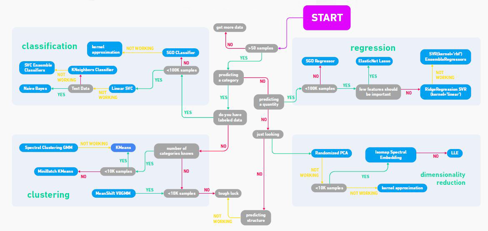
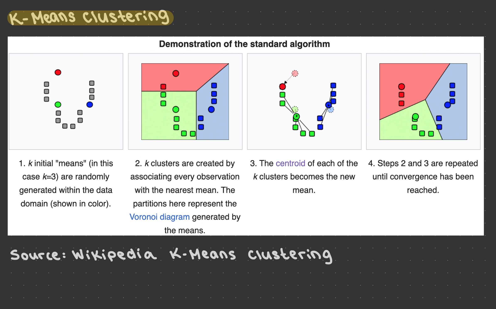
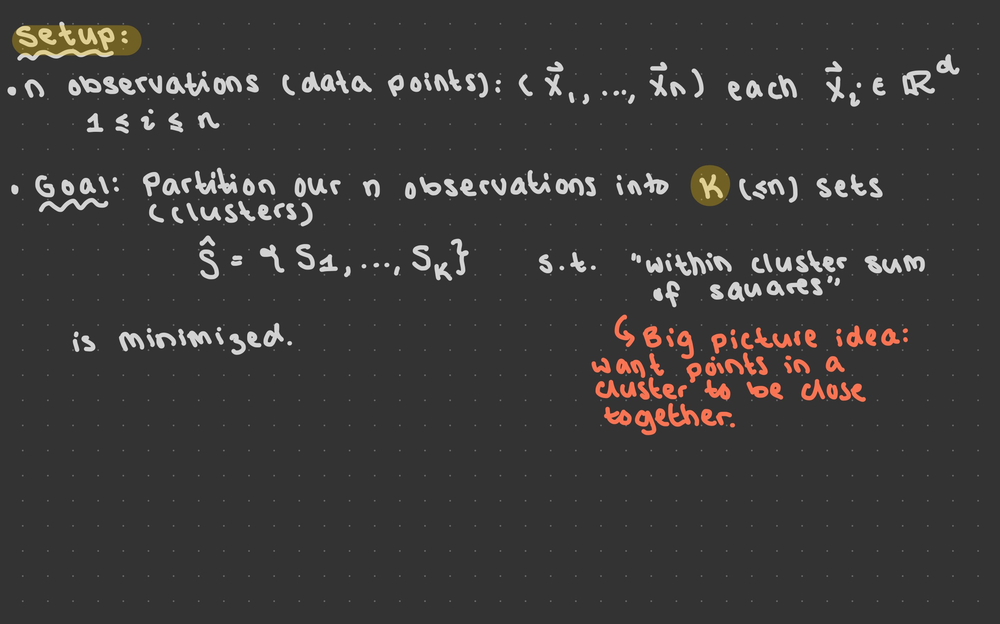
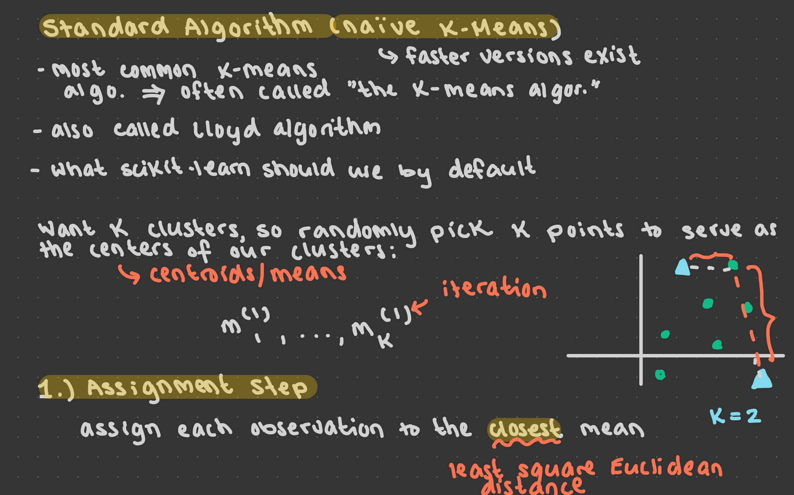
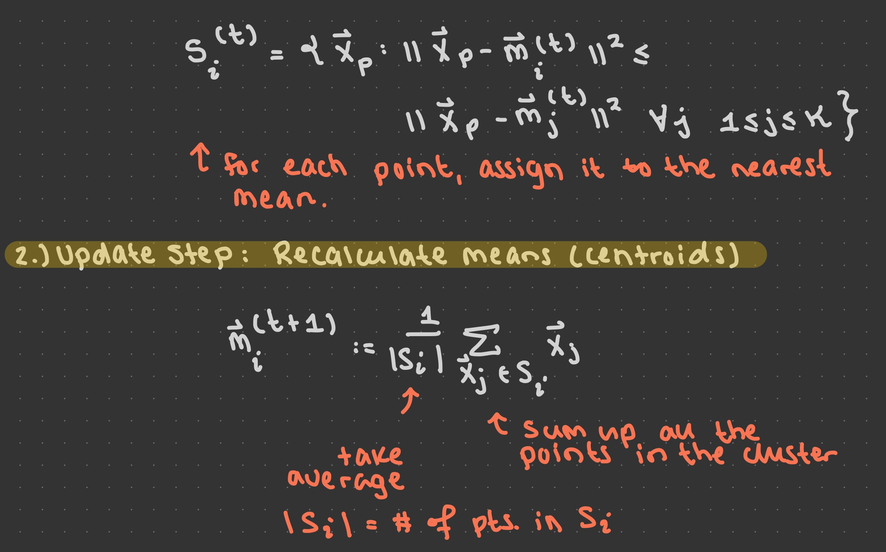
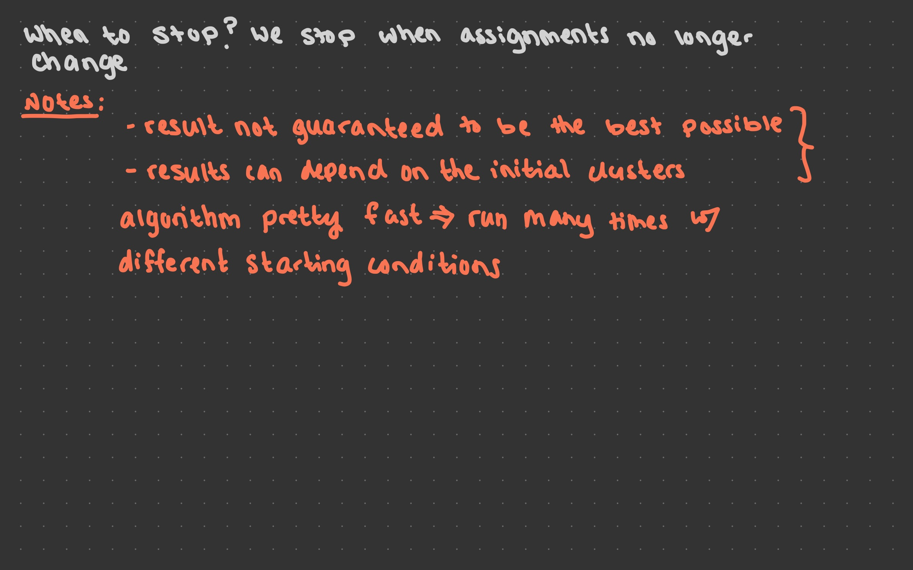

Lecture 15: September 11th, 2023#
We made it to the last lecture :’) How do we all feel today?
Reminders and Updates:
Homework 7 and Homework 8 are due tonight at midnight. Use your tokens to get an extension, if you need it.
You can also use your tokens to submit a outcome revision. If you are missing an outcome and would like credit for it, you can use tokens to submit a revision assignment. Let’s take a brief trip to Canvas to see what this looks like.
Today we will cover K-Means clustering, which is the topic of outcomes P18 and P19. They will be released after today’s lecture and are due Wednesday at midnight, if you would like to attempt them (remember, an A only requires 18 outcomes).
Final project is due Wednesday at midnight! No late submissions will be accepted!
Updated student hours with Yasmeen this week: instead of Tuesday student hours, I will host Wednesday student hours from 12:00pm-1:50pm (our normal lecture time). Come with any questions you might have!
Final Project Questions#
Q: What if we can’t find a perfect linear fit? A: That’s totally fine! Maybe just point out it doesn’t look like a linear fit, and you can’t say much about the relationship. You might consider fitting to a higher degree polynomial, as well.
Q: What if our precision is really low? A: That’s also fine, just don’t try to convince us that the model works really well. You might consider trying to improve the model, or at least elaborate on a few things that you could try. Negative results are fine: I’d rather you say “we can’t make any conclusion” than try to convince of something that’s not true.
K-Means Clustering#
Today we will see our first example from unsupervised machine learning. Can anyone remind us of what the main difference is from supervised machine learning?
Main Difference: Supervised learning uses labeled data, unsupervised learning uses unlabeled data.
Clustering is one of the most famous examples of unsupervised learning, and is something we will see today.
Here is a nice flowchart from the website GeeksforGeeks which gives a nice outline of some different categories within machine learning. Don’t take it too seriously, it’s just kind of fun to look at.

StandardScaler#
I’m a little surprised we haven’t talked about this topic yet, but today we’ll be rescaling numeric data so that it has a mean of zero and a standard deviation of one. Why would we want to do something like this?
From the chat: we want to make things not dependent on units! Example: Suppose I have a DataFrame with one column in kilograms and one column in grams. We might expect that the grams column has numbers that are much larger than the kilograms column. Even though these are both weights, we might be biased towards grams since they are larger numbers.
Load the iris dataset from Seaborn and drop any rows with missing values.
import seaborn as sns
import pandas as pd
import numpy as np
import altair as alt
df = sns.load_dataset("iris").dropna()
df.sample(5)
| sepal_length | sepal_width | petal_length | petal_width | species | |
|---|---|---|---|---|---|
| 57 | 4.9 | 2.4 | 3.3 | 1.0 | versicolor |
| 71 | 6.1 | 2.8 | 4.0 | 1.3 | versicolor |
| 80 | 5.5 | 2.4 | 3.8 | 1.1 | versicolor |
| 106 | 4.9 | 2.5 | 4.5 | 1.7 | virginica |
| 55 | 5.7 | 2.8 | 4.5 | 1.3 | versicolor |
We still have the standard workflow for scikit-learn:
import
instantiate
fitpredictortransform
Import
StandardScalerfromsklearn.preprocessing
from sklearn.preprocessing import StandardScaler
Instantiate a
StandardScalerobject and name itscaler.
scaler = StandardScaler()
type(scaler)
sklearn.preprocessing._data.StandardScaler
Try fitting StandardScaler to the iris dataset.
scaler.fit(df)
---------------------------------------------------------------------------
ValueError Traceback (most recent call last)
Input In [6], in <cell line: 1>()
----> 1 scaler.fit(df)
File ~/opt/miniconda3/envs/math9/lib/python3.9/site-packages/sklearn/preprocessing/_data.py:837, in StandardScaler.fit(self, X, y, sample_weight)
835 # Reset internal state before fitting
836 self._reset()
--> 837 return self.partial_fit(X, y, sample_weight)
File ~/opt/miniconda3/envs/math9/lib/python3.9/site-packages/sklearn/base.py:1151, in _fit_context.<locals>.decorator.<locals>.wrapper(estimator, *args, **kwargs)
1144 estimator._validate_params()
1146 with config_context(
1147 skip_parameter_validation=(
1148 prefer_skip_nested_validation or global_skip_validation
1149 )
1150 ):
-> 1151 return fit_method(estimator, *args, **kwargs)
File ~/opt/miniconda3/envs/math9/lib/python3.9/site-packages/sklearn/preprocessing/_data.py:873, in StandardScaler.partial_fit(self, X, y, sample_weight)
841 """Online computation of mean and std on X for later scaling.
842
843 All of X is processed as a single batch. This is intended for cases
(...)
870 Fitted scaler.
871 """
872 first_call = not hasattr(self, "n_samples_seen_")
--> 873 X = self._validate_data(
874 X,
875 accept_sparse=("csr", "csc"),
876 dtype=FLOAT_DTYPES,
877 force_all_finite="allow-nan",
878 reset=first_call,
879 )
880 n_features = X.shape[1]
882 if sample_weight is not None:
File ~/opt/miniconda3/envs/math9/lib/python3.9/site-packages/sklearn/base.py:604, in BaseEstimator._validate_data(self, X, y, reset, validate_separately, cast_to_ndarray, **check_params)
602 out = X, y
603 elif not no_val_X and no_val_y:
--> 604 out = check_array(X, input_name="X", **check_params)
605 elif no_val_X and not no_val_y:
606 out = _check_y(y, **check_params)
File ~/opt/miniconda3/envs/math9/lib/python3.9/site-packages/sklearn/utils/validation.py:917, in check_array(array, accept_sparse, accept_large_sparse, dtype, order, copy, force_all_finite, ensure_2d, allow_nd, ensure_min_samples, ensure_min_features, estimator, input_name)
915 array = xp.astype(array, dtype, copy=False)
916 else:
--> 917 array = _asarray_with_order(array, order=order, dtype=dtype, xp=xp)
918 except ComplexWarning as complex_warning:
919 raise ValueError(
920 "Complex data not supported\n{}\n".format(array)
921 ) from complex_warning
File ~/opt/miniconda3/envs/math9/lib/python3.9/site-packages/sklearn/utils/_array_api.py:380, in _asarray_with_order(array, dtype, order, copy, xp)
378 array = numpy.array(array, order=order, dtype=dtype)
379 else:
--> 380 array = numpy.asarray(array, order=order, dtype=dtype)
382 # At this point array is a NumPy ndarray. We convert it to an array
383 # container that is consistent with the input's namespace.
384 return xp.asarray(array)
File ~/opt/miniconda3/envs/math9/lib/python3.9/site-packages/pandas/core/generic.py:2064, in NDFrame.__array__(self, dtype)
2063 def __array__(self, dtype: npt.DTypeLike | None = None) -> np.ndarray:
-> 2064 return np.asarray(self._values, dtype=dtype)
ValueError: could not convert string to float: 'setosa'
What’s going on here? Notice the species column has strings, and it doesn’t make sense to scale these. When we use StandardScaler, we only want to apply it to numeric columns.
Let’s get just the numeric columns of our DataFrame. Notice, the only non-numeric column is “species”.
df.columns
Index(['sepal_length', 'sepal_width', 'petal_length', 'petal_width',
'species'],
dtype='object')
numcols = [c for c in df.columns if c != "species"]
numcols
['sepal_length', 'sepal_width', 'petal_length', 'petal_width']
Here != means not equal. Here’s another way we could do it.
[c for c in df.columns if not (c == "species")]
['sepal_length', 'sepal_width', 'petal_length', 'petal_width']
I also just want to show you the following function.
from pandas.api.types import is_numeric_dtype
is_numeric_dtype(df["species"])
False
is_numeric_dtype(df["sepal_length"])
True
df.apply(is_numeric_dtype, axis=0)
sepal_length True
sepal_width True
petal_length True
petal_width True
species False
dtype: bool
[c for c in df.columns if is_numeric_dtype(df[c])]
['sepal_length', 'sepal_width', 'petal_length', 'petal_width']
Now let’s try fitting again.
scaler.fit(df[numcols])
StandardScaler()In a Jupyter environment, please rerun this cell to show the HTML representation or trust the notebook.
On GitHub, the HTML representation is unable to render, please try loading this page with nbviewer.org.
StandardScaler()
Call
transformon the numeric columns ofdf.
df[numcols] = scaler.transform(df[numcols])
df
| sepal_length | sepal_width | petal_length | petal_width | species | |
|---|---|---|---|---|---|
| 0 | -0.900681 | 1.019004 | -1.340227 | -1.315444 | setosa |
| 1 | -1.143017 | -0.131979 | -1.340227 | -1.315444 | setosa |
| 2 | -1.385353 | 0.328414 | -1.397064 | -1.315444 | setosa |
| 3 | -1.506521 | 0.098217 | -1.283389 | -1.315444 | setosa |
| 4 | -1.021849 | 1.249201 | -1.340227 | -1.315444 | setosa |
| ... | ... | ... | ... | ... | ... |
| 145 | 1.038005 | -0.131979 | 0.819596 | 1.448832 | virginica |
| 146 | 0.553333 | -1.282963 | 0.705921 | 0.922303 | virginica |
| 147 | 0.795669 | -0.131979 | 0.819596 | 1.053935 | virginica |
| 148 | 0.432165 | 0.788808 | 0.933271 | 1.448832 | virginica |
| 149 | 0.068662 | -0.131979 | 0.762758 | 0.790671 | virginica |
150 rows × 5 columns
Check that the mean and standard deviation of the resulting columns are 0 and 1, respectively.
df.mean(axis=0)
/var/folders/ct/dspwzk2n6kb19j3s9g3ldtc80000gn/T/ipykernel_59450/2681518468.py:1: FutureWarning: Dropping of nuisance columns in DataFrame reductions (with 'numeric_only=None') is deprecated; in a future version this will raise TypeError. Select only valid columns before calling the reduction.
df.mean(axis=0)
sepal_length -2.775558e-16
sepal_width -9.695948e-16
petal_length -8.652338e-16
petal_width -4.662937e-16
dtype: float64
These values are not exactly zero, but very close. This is all we can expect (remember, we never expect floats to be exactly equal to something else).
df.std(axis=0)
/var/folders/ct/dspwzk2n6kb19j3s9g3ldtc80000gn/T/ipykernel_59450/649938150.py:1: FutureWarning: Dropping of nuisance columns in DataFrame reductions (with 'numeric_only=None') is deprecated; in a future version this will raise TypeError. Select only valid columns before calling the reduction.
df.std(axis=0)
sepal_length 1.00335
sepal_width 1.00335
petal_length 1.00335
petal_width 1.00335
dtype: float64
Similarly, these are not exactly equal to 1, but they are very close, and this is good enough.
First, let me show you how to implement K-Means clustering in scikit-learn. Then we’ll go through the details of how it works.
Import
KMeansfromsklearn.clusterand instantiate aKMeansobject.
from sklearn.cluster import KMeans
kmeans = KMeans()
Fit our
KMeansobject to the numeric columns ofdf.
Notice that when we fit here there’s no target (unlike in Linear Regression, for instance). This is because KMeans is unsupervised. Recall that the target is some correct value we’re trying to predict. Here, we don’t have that.
kmeans.fit(df[numcols])
/Users/yasmeen/opt/miniconda3/envs/math9/lib/python3.9/site-packages/sklearn/cluster/_kmeans.py:1412: FutureWarning: The default value of `n_init` will change from 10 to 'auto' in 1.4. Set the value of `n_init` explicitly to suppress the warning
super()._check_params_vs_input(X, default_n_init=10)
/Users/yasmeen/opt/miniconda3/envs/math9/lib/python3.9/site-packages/threadpoolctl.py:1010: RuntimeWarning:
Found Intel OpenMP ('libiomp') and LLVM OpenMP ('libomp') loaded at
the same time. Both libraries are known to be incompatible and this
can cause random crashes or deadlocks on Linux when loaded in the
same Python program.
Using threadpoolctl may cause crashes or deadlocks. For more
information and possible workarounds, please see
https://github.com/joblib/threadpoolctl/blob/master/multiple_openmp.md
warnings.warn(msg, RuntimeWarning)
KMeans()In a Jupyter environment, please rerun this cell to show the HTML representation or trust the notebook.
On GitHub, the HTML representation is unable to render, please try loading this page with nbviewer.org.
KMeans()
Put the predicted clusters into a new column called “cluster”.
df["cluster"] = kmeans.predict(df[numcols])
df
| sepal_length | sepal_width | petal_length | petal_width | species | cluster | |
|---|---|---|---|---|---|---|
| 0 | -0.900681 | 1.019004 | -1.340227 | -1.315444 | setosa | 1 |
| 1 | -1.143017 | -0.131979 | -1.340227 | -1.315444 | setosa | 5 |
| 2 | -1.385353 | 0.328414 | -1.397064 | -1.315444 | setosa | 5 |
| 3 | -1.506521 | 0.098217 | -1.283389 | -1.315444 | setosa | 5 |
| 4 | -1.021849 | 1.249201 | -1.340227 | -1.315444 | setosa | 1 |
| ... | ... | ... | ... | ... | ... | ... |
| 145 | 1.038005 | -0.131979 | 0.819596 | 1.448832 | virginica | 6 |
| 146 | 0.553333 | -1.282963 | 0.705921 | 0.922303 | virginica | 0 |
| 147 | 0.795669 | -0.131979 | 0.819596 | 1.053935 | virginica | 6 |
| 148 | 0.432165 | 0.788808 | 0.933271 | 1.448832 | virginica | 6 |
| 149 | 0.068662 | -0.131979 | 0.762758 | 0.790671 | virginica | 0 |
150 rows × 6 columns
Make an altair chart with sepal_length along the x-axis, petal_length along the y-axis, and with colors/shapes determined by the cluster predicted by
kmeans.
numcols
['sepal_length', 'sepal_width', 'petal_length', 'petal_width']
alt.Chart(df).mark_point(filled=True,size=100).encode(
x="sepal_length",
y="petal_length",
color="cluster:N",
shape="cluster:N"
)
Usually, we will specify the number of clusters that we want. If not, the default number of clusters is 8. In the code above, it’s not that 8 was determined to be a good number of clusters, this is just the default.
help(kmeans)
Help on KMeans in module sklearn.cluster._kmeans object:
class KMeans(_BaseKMeans)
| KMeans(n_clusters=8, *, init='k-means++', n_init='warn', max_iter=300, tol=0.0001, verbose=0, random_state=None, copy_x=True, algorithm='lloyd')
|
| K-Means clustering.
|
| Read more in the :ref:`User Guide <k_means>`.
|
| Parameters
| ----------
|
| n_clusters : int, default=8
| The number of clusters to form as well as the number of
| centroids to generate.
|
| init : {'k-means++', 'random'}, callable or array-like of shape (n_clusters, n_features), default='k-means++'
| Method for initialization:
|
| 'k-means++' : selects initial cluster centroids using sampling based on
| an empirical probability distribution of the points' contribution to the
| overall inertia. This technique speeds up convergence. The algorithm
| implemented is "greedy k-means++". It differs from the vanilla k-means++
| by making several trials at each sampling step and choosing the best centroid
| among them.
|
| 'random': choose `n_clusters` observations (rows) at random from data
| for the initial centroids.
|
| If an array is passed, it should be of shape (n_clusters, n_features)
| and gives the initial centers.
|
| If a callable is passed, it should take arguments X, n_clusters and a
| random state and return an initialization.
|
| n_init : 'auto' or int, default=10
| Number of times the k-means algorithm is run with different centroid
| seeds. The final results is the best output of `n_init` consecutive runs
| in terms of inertia. Several runs are recommended for sparse
| high-dimensional problems (see :ref:`kmeans_sparse_high_dim`).
|
| When `n_init='auto'`, the number of runs depends on the value of init:
| 10 if using `init='random'` or `init` is a callable;
| 1 if using `init='k-means++'` or `init` is an array-like.
|
| .. versionadded:: 1.2
| Added 'auto' option for `n_init`.
|
| .. versionchanged:: 1.4
| Default value for `n_init` will change from 10 to `'auto'` in version 1.4.
|
| max_iter : int, default=300
| Maximum number of iterations of the k-means algorithm for a
| single run.
|
| tol : float, default=1e-4
| Relative tolerance with regards to Frobenius norm of the difference
| in the cluster centers of two consecutive iterations to declare
| convergence.
|
| verbose : int, default=0
| Verbosity mode.
|
| random_state : int, RandomState instance or None, default=None
| Determines random number generation for centroid initialization. Use
| an int to make the randomness deterministic.
| See :term:`Glossary <random_state>`.
|
| copy_x : bool, default=True
| When pre-computing distances it is more numerically accurate to center
| the data first. If copy_x is True (default), then the original data is
| not modified. If False, the original data is modified, and put back
| before the function returns, but small numerical differences may be
| introduced by subtracting and then adding the data mean. Note that if
| the original data is not C-contiguous, a copy will be made even if
| copy_x is False. If the original data is sparse, but not in CSR format,
| a copy will be made even if copy_x is False.
|
| algorithm : {"lloyd", "elkan", "auto", "full"}, default="lloyd"
| K-means algorithm to use. The classical EM-style algorithm is `"lloyd"`.
| The `"elkan"` variation can be more efficient on some datasets with
| well-defined clusters, by using the triangle inequality. However it's
| more memory intensive due to the allocation of an extra array of shape
| `(n_samples, n_clusters)`.
|
| `"auto"` and `"full"` are deprecated and they will be removed in
| Scikit-Learn 1.3. They are both aliases for `"lloyd"`.
|
| .. versionchanged:: 0.18
| Added Elkan algorithm
|
| .. versionchanged:: 1.1
| Renamed "full" to "lloyd", and deprecated "auto" and "full".
| Changed "auto" to use "lloyd" instead of "elkan".
|
| Attributes
| ----------
| cluster_centers_ : ndarray of shape (n_clusters, n_features)
| Coordinates of cluster centers. If the algorithm stops before fully
| converging (see ``tol`` and ``max_iter``), these will not be
| consistent with ``labels_``.
|
| labels_ : ndarray of shape (n_samples,)
| Labels of each point
|
| inertia_ : float
| Sum of squared distances of samples to their closest cluster center,
| weighted by the sample weights if provided.
|
| n_iter_ : int
| Number of iterations run.
|
| n_features_in_ : int
| Number of features seen during :term:`fit`.
|
| .. versionadded:: 0.24
|
| feature_names_in_ : ndarray of shape (`n_features_in_`,)
| Names of features seen during :term:`fit`. Defined only when `X`
| has feature names that are all strings.
|
| .. versionadded:: 1.0
|
| See Also
| --------
| MiniBatchKMeans : Alternative online implementation that does incremental
| updates of the centers positions using mini-batches.
| For large scale learning (say n_samples > 10k) MiniBatchKMeans is
| probably much faster than the default batch implementation.
|
| Notes
| -----
| The k-means problem is solved using either Lloyd's or Elkan's algorithm.
|
| The average complexity is given by O(k n T), where n is the number of
| samples and T is the number of iteration.
|
| The worst case complexity is given by O(n^(k+2/p)) with
| n = n_samples, p = n_features.
| Refer to :doi:`"How slow is the k-means method?" D. Arthur and S. Vassilvitskii -
| SoCG2006.<10.1145/1137856.1137880>` for more details.
|
| In practice, the k-means algorithm is very fast (one of the fastest
| clustering algorithms available), but it falls in local minima. That's why
| it can be useful to restart it several times.
|
| If the algorithm stops before fully converging (because of ``tol`` or
| ``max_iter``), ``labels_`` and ``cluster_centers_`` will not be consistent,
| i.e. the ``cluster_centers_`` will not be the means of the points in each
| cluster. Also, the estimator will reassign ``labels_`` after the last
| iteration to make ``labels_`` consistent with ``predict`` on the training
| set.
|
| Examples
| --------
|
| >>> from sklearn.cluster import KMeans
| >>> import numpy as np
| >>> X = np.array([[1, 2], [1, 4], [1, 0],
| ... [10, 2], [10, 4], [10, 0]])
| >>> kmeans = KMeans(n_clusters=2, random_state=0, n_init="auto").fit(X)
| >>> kmeans.labels_
| array([1, 1, 1, 0, 0, 0], dtype=int32)
| >>> kmeans.predict([[0, 0], [12, 3]])
| array([1, 0], dtype=int32)
| >>> kmeans.cluster_centers_
| array([[10., 2.],
| [ 1., 2.]])
|
| Method resolution order:
| KMeans
| _BaseKMeans
| sklearn.base.ClassNamePrefixFeaturesOutMixin
| sklearn.base.TransformerMixin
| sklearn.utils._set_output._SetOutputMixin
| sklearn.base.ClusterMixin
| sklearn.base.BaseEstimator
| sklearn.utils._metadata_requests._MetadataRequester
| abc.ABC
| builtins.object
|
| Methods defined here:
|
| __init__(self, n_clusters=8, *, init='k-means++', n_init='warn', max_iter=300, tol=0.0001, verbose=0, random_state=None, copy_x=True, algorithm='lloyd')
| Initialize self. See help(type(self)) for accurate signature.
|
| fit(self, X, y=None, sample_weight=None)
| Compute k-means clustering.
|
| Parameters
| ----------
| X : {array-like, sparse matrix} of shape (n_samples, n_features)
| Training instances to cluster. It must be noted that the data
| will be converted to C ordering, which will cause a memory
| copy if the given data is not C-contiguous.
| If a sparse matrix is passed, a copy will be made if it's not in
| CSR format.
|
| y : Ignored
| Not used, present here for API consistency by convention.
|
| sample_weight : array-like of shape (n_samples,), default=None
| The weights for each observation in X. If None, all observations
| are assigned equal weight. `sample_weight` is not used during
| initialization if `init` is a callable or a user provided array.
|
| .. versionadded:: 0.20
|
| Returns
| -------
| self : object
| Fitted estimator.
|
| set_fit_request(self: sklearn.cluster._kmeans.KMeans, *, sample_weight: Union[bool, NoneType, str] = '$UNCHANGED$') -> sklearn.cluster._kmeans.KMeans
| Request metadata passed to the ``fit`` method.
|
| Note that this method is only relevant if
| ``enable_metadata_routing=True`` (see :func:`sklearn.set_config`).
| Please see :ref:`User Guide <metadata_routing>` on how the routing
| mechanism works.
|
| The options for each parameter are:
|
| - ``True``: metadata is requested, and passed to ``fit`` if provided. The request is ignored if metadata is not provided.
|
| - ``False``: metadata is not requested and the meta-estimator will not pass it to ``fit``.
|
| - ``None``: metadata is not requested, and the meta-estimator will raise an error if the user provides it.
|
| - ``str``: metadata should be passed to the meta-estimator with this given alias instead of the original name.
|
| The default (``sklearn.utils.metadata_routing.UNCHANGED``) retains the
| existing request. This allows you to change the request for some
| parameters and not others.
|
| .. versionadded:: 1.3
|
| .. note::
| This method is only relevant if this estimator is used as a
| sub-estimator of a meta-estimator, e.g. used inside a
| :class:`pipeline.Pipeline`. Otherwise it has no effect.
|
| Parameters
| ----------
| sample_weight : str, True, False, or None, default=sklearn.utils.metadata_routing.UNCHANGED
| Metadata routing for ``sample_weight`` parameter in ``fit``.
|
| Returns
| -------
| self : object
| The updated object.
|
| set_predict_request(self: sklearn.cluster._kmeans.KMeans, *, sample_weight: Union[bool, NoneType, str] = '$UNCHANGED$') -> sklearn.cluster._kmeans.KMeans
| Request metadata passed to the ``predict`` method.
|
| Note that this method is only relevant if
| ``enable_metadata_routing=True`` (see :func:`sklearn.set_config`).
| Please see :ref:`User Guide <metadata_routing>` on how the routing
| mechanism works.
|
| The options for each parameter are:
|
| - ``True``: metadata is requested, and passed to ``predict`` if provided. The request is ignored if metadata is not provided.
|
| - ``False``: metadata is not requested and the meta-estimator will not pass it to ``predict``.
|
| - ``None``: metadata is not requested, and the meta-estimator will raise an error if the user provides it.
|
| - ``str``: metadata should be passed to the meta-estimator with this given alias instead of the original name.
|
| The default (``sklearn.utils.metadata_routing.UNCHANGED``) retains the
| existing request. This allows you to change the request for some
| parameters and not others.
|
| .. versionadded:: 1.3
|
| .. note::
| This method is only relevant if this estimator is used as a
| sub-estimator of a meta-estimator, e.g. used inside a
| :class:`pipeline.Pipeline`. Otherwise it has no effect.
|
| Parameters
| ----------
| sample_weight : str, True, False, or None, default=sklearn.utils.metadata_routing.UNCHANGED
| Metadata routing for ``sample_weight`` parameter in ``predict``.
|
| Returns
| -------
| self : object
| The updated object.
|
| set_score_request(self: sklearn.cluster._kmeans.KMeans, *, sample_weight: Union[bool, NoneType, str] = '$UNCHANGED$') -> sklearn.cluster._kmeans.KMeans
| Request metadata passed to the ``score`` method.
|
| Note that this method is only relevant if
| ``enable_metadata_routing=True`` (see :func:`sklearn.set_config`).
| Please see :ref:`User Guide <metadata_routing>` on how the routing
| mechanism works.
|
| The options for each parameter are:
|
| - ``True``: metadata is requested, and passed to ``score`` if provided. The request is ignored if metadata is not provided.
|
| - ``False``: metadata is not requested and the meta-estimator will not pass it to ``score``.
|
| - ``None``: metadata is not requested, and the meta-estimator will raise an error if the user provides it.
|
| - ``str``: metadata should be passed to the meta-estimator with this given alias instead of the original name.
|
| The default (``sklearn.utils.metadata_routing.UNCHANGED``) retains the
| existing request. This allows you to change the request for some
| parameters and not others.
|
| .. versionadded:: 1.3
|
| .. note::
| This method is only relevant if this estimator is used as a
| sub-estimator of a meta-estimator, e.g. used inside a
| :class:`pipeline.Pipeline`. Otherwise it has no effect.
|
| Parameters
| ----------
| sample_weight : str, True, False, or None, default=sklearn.utils.metadata_routing.UNCHANGED
| Metadata routing for ``sample_weight`` parameter in ``score``.
|
| Returns
| -------
| self : object
| The updated object.
|
| ----------------------------------------------------------------------
| Data and other attributes defined here:
|
| __abstractmethods__ = frozenset()
|
| __annotations__ = {'_parameter_constraints': <class 'dict'>}
|
| ----------------------------------------------------------------------
| Methods inherited from _BaseKMeans:
|
| fit_predict(self, X, y=None, sample_weight=None)
| Compute cluster centers and predict cluster index for each sample.
|
| Convenience method; equivalent to calling fit(X) followed by
| predict(X).
|
| Parameters
| ----------
| X : {array-like, sparse matrix} of shape (n_samples, n_features)
| New data to transform.
|
| y : Ignored
| Not used, present here for API consistency by convention.
|
| sample_weight : array-like of shape (n_samples,), default=None
| The weights for each observation in X. If None, all observations
| are assigned equal weight.
|
| Returns
| -------
| labels : ndarray of shape (n_samples,)
| Index of the cluster each sample belongs to.
|
| fit_transform(self, X, y=None, sample_weight=None)
| Compute clustering and transform X to cluster-distance space.
|
| Equivalent to fit(X).transform(X), but more efficiently implemented.
|
| Parameters
| ----------
| X : {array-like, sparse matrix} of shape (n_samples, n_features)
| New data to transform.
|
| y : Ignored
| Not used, present here for API consistency by convention.
|
| sample_weight : array-like of shape (n_samples,), default=None
| The weights for each observation in X. If None, all observations
| are assigned equal weight.
|
| Returns
| -------
| X_new : ndarray of shape (n_samples, n_clusters)
| X transformed in the new space.
|
| predict(self, X, sample_weight='deprecated')
| Predict the closest cluster each sample in X belongs to.
|
| In the vector quantization literature, `cluster_centers_` is called
| the code book and each value returned by `predict` is the index of
| the closest code in the code book.
|
| Parameters
| ----------
| X : {array-like, sparse matrix} of shape (n_samples, n_features)
| New data to predict.
|
| sample_weight : array-like of shape (n_samples,), default=None
| The weights for each observation in X. If None, all observations
| are assigned equal weight.
|
| .. deprecated:: 1.3
| The parameter `sample_weight` is deprecated in version 1.3
| and will be removed in 1.5.
|
| Returns
| -------
| labels : ndarray of shape (n_samples,)
| Index of the cluster each sample belongs to.
|
| score(self, X, y=None, sample_weight=None)
| Opposite of the value of X on the K-means objective.
|
| Parameters
| ----------
| X : {array-like, sparse matrix} of shape (n_samples, n_features)
| New data.
|
| y : Ignored
| Not used, present here for API consistency by convention.
|
| sample_weight : array-like of shape (n_samples,), default=None
| The weights for each observation in X. If None, all observations
| are assigned equal weight.
|
| Returns
| -------
| score : float
| Opposite of the value of X on the K-means objective.
|
| transform(self, X)
| Transform X to a cluster-distance space.
|
| In the new space, each dimension is the distance to the cluster
| centers. Note that even if X is sparse, the array returned by
| `transform` will typically be dense.
|
| Parameters
| ----------
| X : {array-like, sparse matrix} of shape (n_samples, n_features)
| New data to transform.
|
| Returns
| -------
| X_new : ndarray of shape (n_samples, n_clusters)
| X transformed in the new space.
|
| ----------------------------------------------------------------------
| Methods inherited from sklearn.base.ClassNamePrefixFeaturesOutMixin:
|
| get_feature_names_out(self, input_features=None)
| Get output feature names for transformation.
|
| The feature names out will prefixed by the lowercased class name. For
| example, if the transformer outputs 3 features, then the feature names
| out are: `["class_name0", "class_name1", "class_name2"]`.
|
| Parameters
| ----------
| input_features : array-like of str or None, default=None
| Only used to validate feature names with the names seen in :meth:`fit`.
|
| Returns
| -------
| feature_names_out : ndarray of str objects
| Transformed feature names.
|
| ----------------------------------------------------------------------
| Data descriptors inherited from sklearn.base.ClassNamePrefixFeaturesOutMixin:
|
| __dict__
| dictionary for instance variables (if defined)
|
| __weakref__
| list of weak references to the object (if defined)
|
| ----------------------------------------------------------------------
| Methods inherited from sklearn.utils._set_output._SetOutputMixin:
|
| set_output(self, *, transform=None)
| Set output container.
|
| See :ref:`sphx_glr_auto_examples_miscellaneous_plot_set_output.py`
| for an example on how to use the API.
|
| Parameters
| ----------
| transform : {"default", "pandas"}, default=None
| Configure output of `transform` and `fit_transform`.
|
| - `"default"`: Default output format of a transformer
| - `"pandas"`: DataFrame output
| - `None`: Transform configuration is unchanged
|
| Returns
| -------
| self : estimator instance
| Estimator instance.
|
| ----------------------------------------------------------------------
| Class methods inherited from sklearn.utils._set_output._SetOutputMixin:
|
| __init_subclass__(auto_wrap_output_keys=('transform',), **kwargs) from abc.ABCMeta
| This method is called when a class is subclassed.
|
| The default implementation does nothing. It may be
| overridden to extend subclasses.
|
| ----------------------------------------------------------------------
| Methods inherited from sklearn.base.BaseEstimator:
|
| __getstate__(self)
|
| __repr__(self, N_CHAR_MAX=700)
| Return repr(self).
|
| __setstate__(self, state)
|
| __sklearn_clone__(self)
|
| get_params(self, deep=True)
| Get parameters for this estimator.
|
| Parameters
| ----------
| deep : bool, default=True
| If True, will return the parameters for this estimator and
| contained subobjects that are estimators.
|
| Returns
| -------
| params : dict
| Parameter names mapped to their values.
|
| set_params(self, **params)
| Set the parameters of this estimator.
|
| The method works on simple estimators as well as on nested objects
| (such as :class:`~sklearn.pipeline.Pipeline`). The latter have
| parameters of the form ``<component>__<parameter>`` so that it's
| possible to update each component of a nested object.
|
| Parameters
| ----------
| **params : dict
| Estimator parameters.
|
| Returns
| -------
| self : estimator instance
| Estimator instance.
|
| ----------------------------------------------------------------------
| Methods inherited from sklearn.utils._metadata_requests._MetadataRequester:
|
| get_metadata_routing(self)
| Get metadata routing of this object.
|
| Please check :ref:`User Guide <metadata_routing>` on how the routing
| mechanism works.
|
| Returns
| -------
| routing : MetadataRequest
| A :class:`~utils.metadata_routing.MetadataRequest` encapsulating
| routing information.
Create a new
KMeansobject namedkmeans2and specify that it should include 2 clusters.
kmeans2 = KMeans(n_clusters=2)
Fit
kmeans2and then store the predictions in a new column called cluster2.
kmeans2.fit(df[numcols])
/Users/yasmeen/opt/miniconda3/envs/math9/lib/python3.9/site-packages/sklearn/cluster/_kmeans.py:1412: FutureWarning: The default value of `n_init` will change from 10 to 'auto' in 1.4. Set the value of `n_init` explicitly to suppress the warning
super()._check_params_vs_input(X, default_n_init=10)
KMeans(n_clusters=2)In a Jupyter environment, please rerun this cell to show the HTML representation or trust the notebook.
On GitHub, the HTML representation is unable to render, please try loading this page with nbviewer.org.
KMeans(n_clusters=2)
df["cluster2"] = kmeans2.predict(df[numcols])
Make the same altair chart as above, but now with the colors and shapes determined by cluster2.
alt.Chart(df).mark_point(size=100,filled=True).encode(
x="sepal_length",
y="petal_length",
color="cluster2:N",
shape="cluster2:N"
)
Notice how much more clear the clusters are here! This is looking a little more promising to me than the previous example.
Using predictions from cluster2, make a list of altair charts that have the same encodings as before, but with the y-axis going through all columns of
numcols.
numcols
['sepal_length', 'sepal_width', 'petal_length', 'petal_width']
chart_list = []
for c in numcols:
chart = alt.Chart(df).mark_point(size=100,filled=True).encode(
x="sepal_length",
y=c,
color="cluster2:N",
shape="cluster2:N"
)
chart_list.append(chart)
#list of altair charts
chart_list
[alt.Chart(...), alt.Chart(...), alt.Chart(...), alt.Chart(...)]
#unpack the charts and stack them vertically
alt.vconcat(*chart_list)
Importance of Scaling#
Exercise#
Make a DataFrame
dfwith two columns, “miles” and “cars”, containing the following five data points in (miles, cars): (0,1), (0,5), (1,0), (1,1), (1,5).For later use, make a copy of df called
df2. Be sure to use .copy().Using K-Means clustering, divide this
dfdata into two clusters. Store the data in a new column called “cluster”.Does the result match what you expect?
df = pd.DataFrame([[0,1],[0,5],[1,0],[1,1],[1,5]], columns=["miles","cars"])
df
| miles | cars | |
|---|---|---|
| 0 | 0 | 1 |
| 1 | 0 | 5 |
| 2 | 1 | 0 |
| 3 | 1 | 1 |
| 4 | 1 | 5 |
# here's another way
df = pd.DataFrame({"miles":[0,0,1,1,1],"cars":[1,5,0,1,5]})
df
| miles | cars | |
|---|---|---|
| 0 | 0 | 1 |
| 1 | 0 | 5 |
| 2 | 1 | 0 |
| 3 | 1 | 1 |
| 4 | 1 | 5 |
df2 = df.copy()
Think about how you expect the points to be clustered together. Then compare with what we get below.
kmeans = KMeans(n_clusters=2)
kmeans.fit(df)
/Users/yasmeen/opt/miniconda3/envs/math9/lib/python3.9/site-packages/sklearn/cluster/_kmeans.py:1412: FutureWarning: The default value of `n_init` will change from 10 to 'auto' in 1.4. Set the value of `n_init` explicitly to suppress the warning
super()._check_params_vs_input(X, default_n_init=10)
KMeans(n_clusters=2)In a Jupyter environment, please rerun this cell to show the HTML representation or trust the notebook.
On GitHub, the HTML representation is unable to render, please try loading this page with nbviewer.org.
KMeans(n_clusters=2)
df["clusters"] = kmeans.predict(df)
df
| miles | cars | clusters | |
|---|---|---|---|
| 0 | 0 | 1 | 0 |
| 1 | 0 | 5 | 1 |
| 2 | 1 | 0 | 0 |
| 3 | 1 | 1 | 0 |
| 4 | 1 | 5 | 1 |
Some observations: Two data points with 5 cars are in one cluster, while the remaining data points with 0 or 1 cars are in another cluster. Note: The names of the clusters are not important.
Rename the miles column of
df2to “feet”, and convert the values from miles to feet.
df2 = df2.rename({"miles":"feet"},axis=1).copy()
df2
| feet | cars | |
|---|---|---|
| 0 | 0 | 1 |
| 1 | 0 | 5 |
| 2 | 1 | 0 |
| 3 | 1 | 1 |
| 4 | 1 | 5 |
#There are 5280 feet in a mile
df2.feet = df.miles
df2.feet = 5280*df2.feet
df2
| feet | cars | |
|---|---|---|
| 0 | 0 | 1 |
| 1 | 0 | 5 |
| 2 | 5280 | 0 |
| 3 | 5280 | 1 |
| 4 | 5280 | 5 |
Notice, df2 contains the exact same information as df, but now the “feet” column is overpowering the “cars” column. This is bad because we only changed the unit of measurement used.
Using K-Means clustering, divide the
df2data into two clusters. Store the data in a new column called “cluster”.
kmeans2 = KMeans(n_clusters=2)
kmeans2.fit(df2)
/Users/yasmeen/opt/miniconda3/envs/math9/lib/python3.9/site-packages/sklearn/cluster/_kmeans.py:1412: FutureWarning: The default value of `n_init` will change from 10 to 'auto' in 1.4. Set the value of `n_init` explicitly to suppress the warning
super()._check_params_vs_input(X, default_n_init=10)
KMeans(n_clusters=2)In a Jupyter environment, please rerun this cell to show the HTML representation or trust the notebook.
On GitHub, the HTML representation is unable to render, please try loading this page with nbviewer.org.
KMeans(n_clusters=2)
df2["clusters"] = kmeans2.predict(df2)
df2
| feet | cars | clusters | |
|---|---|---|---|
| 0 | 0 | 1 | 1 |
| 1 | 0 | 5 | 1 |
| 2 | 5280 | 0 | 0 |
| 3 | 5280 | 1 | 0 |
| 4 | 5280 | 5 | 0 |
Notice now that the clusters are different compared to when we first tried with just df. Here, because feet is so much larger than cars, it is influencing the model.
Exercise: Apply StandardScaler to df2 and then try clustering again. See what happens!
Upshot: Unless the same unit of measurement is used over the columns, we should normalize (e.g. with StandardScaler).
The K-Means Algorithm#
Reference: Wikipedia page on K-Means clustering. (See the standard algorithm section.)
This portion of the lecture I plan to sketch out on the iPad.





Iterating by hand#
Question 1: Using the following dataset, run the KMeans algorithm by hand, starting with the initial points (3,0) and (1,0). (How many clusters do you expect with this setup?)
Two initial points means we expect 2 clusters.
Warning: Notice the scaling on the x- and y-axes.
import pandas as pd
import altair as alt
from sklearn.cluster import KMeans
df = pd.DataFrame({"x":[0,0,1,1,3,4],"y":[0,10,0,10,0,0]})
datapoints = alt.Chart(df).mark_point(size=100, color="black", filled=True).encode(
x = "x",
y = "y"
)
datapoints
First Iteration: Cluster 1: Points closest to (3,0) (3,0),(4,0) Cluster 2: Points closest to (1,0) (1,0),(0,0), (1,10), (0,10)
It’s not too hard to see that (4,0) is closer to (3,0). Similarly, (0,0) is closer to (1,0)
Distance between (1,0) and (1,10): 10 Distance between (3,0) and (1,10): \(\sqrt{2^2 + (-10)^2} = \sqrt{4 + 100} = \sqrt{104} > 10\)
Let’s now compute the centroids of each cluster. Cluster 1: \(\frac{1}{2}(3+4,0) = (3.5,0)\) Cluster 2: \(\frac{1}{4}(1+0+1+0,0+0+10+10) = (0.5,5)\)
round1 = pd.DataFrame({"x":[3.5,0.5],"y":[0,5]})
average1 = alt.Chart(round1).mark_point(size=100,filled=True,color="green").encode(
x="x",
y="y"
)
datapoints + average1
Second Iteration: Cluster 1: Points closest to (3.5,0): (3,0),(4,0),(1,0),(0,0) Cluster 2: Points closest to (0.5,5): (0,10) and (1,10)
Compute centroids again: (2,0) and (0.5,10)
round2 = pd.DataFrame({"x":[2,0.5],"y":[0,10]})
average2 = alt.Chart(round2).mark_point(color="orange",size=100,filled=True).encode(
x="x",
y="y"
)
datapoints + average1 + average2
Notice that this is where we terminate the algorithm because if we try to reassign points to the nearest centroid, they all stay in the same cluster.
Let’s check how we did.
kmeans = KMeans(n_clusters=2)
kmeans.fit(df)
df["clusters"] = kmeans.predict(df)
/Users/yasmeen/opt/miniconda3/envs/math9/lib/python3.9/site-packages/sklearn/cluster/_kmeans.py:1412: FutureWarning: The default value of `n_init` will change from 10 to 'auto' in 1.4. Set the value of `n_init` explicitly to suppress the warning
super()._check_params_vs_input(X, default_n_init=10)
datapoints.encode(
color="clusters:N"
)
![Created in deepnote.com]() Created in Deepnote
Created in Deepnote